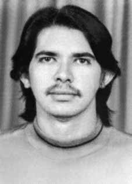

Antônio
Teodoro
de Castro
CIRCUNSTÂNCIAS DA MORTE
O Relatório Arroyo registra que, em 30 de setembro de 1972, Antônio Teodoro de Castro foi ferido no braço por uma rajada de tiros disparada por militares, mas conseguiu escapar com vida.
O desaparecimento de Antônio foi relatado por Arroyo como tendo ocorrido em 25 de dezembro de 1973, no episódio que ficou conhecido posteriormente como o Chafurdo de Natal. O relatório do Ministério da Marinha, de 1993, relata que Antonio “foi morto durante ataque de terroristas à equipe que conduzia”, em 27 de fevereiro de 1974.
Esta data também é informada pelo relatório do CIE de 1975. Por fim, o relatório da CEMDP se refere a relatos de moradores sobre o sepultamento de Antônio Teodoro, seus restos mortais estariam enterrados em um cemitério clandestino localizado no fundo da base da Bacaba, no quilômetro 68 da Transamazônica.
The Arroyo Report records that, on September 30, 1972, Antônio Teodoro de Castro was injured in the arm by a volley of shots fired by military personnel, but managed to escape with his life.
Antônio's disappearance was reported by Arroyo as having occurred on December 25, 1973, in the episode that later became known as the Natal Wallowing. The 1993 report from the Ministry of the Navy states that Antonio “was killed during a terrorist attack on the team he was driving”, on February 27, 1974.
This date is also informed by the CIE report from 1975. Finally, the CEMDP report refers to reports from residents about the burial of Antônio Teodoro, his remains would be buried in a clandestine cemetery located at the bottom of the Bacaba base, at kilometer 68 of the Transamazônica.
El Informe Arroyo registra que, el 30 de septiembre de 1972, Antônio Teodoro de Castro fue herido en un brazo por una ráfaga de disparos efectuada por militares, pero logró escapar con vida.
Arroyo informó que la desaparición de Antônio ocurrió el 25 de diciembre de 1973, en el episodio que luego se conoció como el Revolcadero Natal. El informe del Ministerio de Marina de 1993 afirma que Antonio “murió durante un atentado terrorista contra el equipo que conducía”, el 27 de febrero de 1974.
Esta fecha también está informada por el informe de la CIE de 1975. Finalmente, el informe del CEMDP hace referencia a informes de vecinos sobre el entierro de Antônio Teodoro, sus restos serían enterrados en un cementerio clandestino ubicado al pie de la base de Bacaba, en el kilómetro 68 de la Transamazônica.